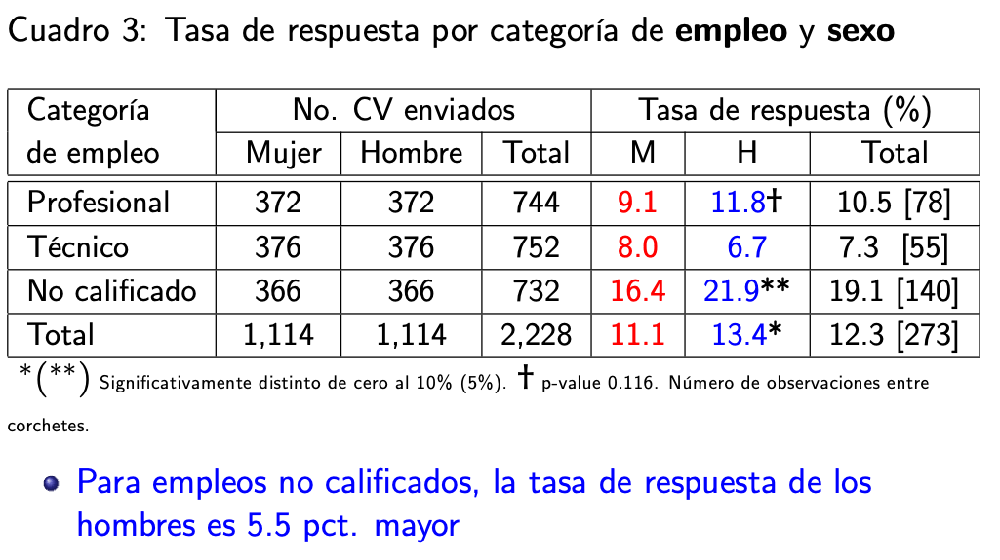

Pruebas de significancia
Es una de las técnicas más usadas para el análisis en ciencias sociales. Sirve, por ejemplo, para comparar entre grupos:
Comparar la media de ingresos de hombres y mujeres
Comparar la proporción de personas que votarán a candidato X por Lima y en Regiones
Comparar los ingresos de profesores en la gestión pública y en la gestión privada
La idea es comparar las estimaciones puntuales entre ambos grupos y también poder extrapolar estas diferencias a la población.
Vamos a comenzar por comparaciones entre solo 2 grupos (por el momento), que corresponde a una variable binaria o dicotómica, como sexo (hombres/mujeres), ámbito (urbano/rural), gestión educativa (pública/privada).
Para mostrar un ejemplo, vamos a usar el trabajo de (Galarza, Kogan, and Yamada 2012) que evalúa la discriminación en el mercado laborar entre hombres y mujeres. Estos autores enviaron CVs con exactas cualificaciones a ofertas reales de trabajo, variando solo el nombre del aplicante, con nombres de hombres y mujeres. La variable de respuesta es la tasa de respuesta a estos CVs, es decir, de cuántos CVs enviados se recibió una llamada para una entrevista.
En cualquier prueba de significancia se tiene que presentar una hipótesis nula, que generalmente es la hipótesis de no diferencias o de no efectos. Este trabajo parte de una idea que existe una discriminación de género en el mercado laboral, por lo que la hipótesis nula indicaría lo contrario. En el caso de este trabajo se tendría:
H0: Tasa de respuesta a CVs de hombres = Tasa de respuesta a CVs de mujeres
o lo que es lo mismo
H0: Tasa de respuesta a CVs de hombres - Tasa de respuesta a CVs de mujeres = 0
En ese trabajo se presenta el siguiente cuadro de resultados:

En la muestra total de 2,228 CVs enviados, mitad de CVs con nombres de hombres y la otra mitad con nombres de mujeres, todos con las mismas cualificacions, se tiene que la tasa de respuesta para los CVs de hombres es 13.4% y para los CVs de mujeres es 11.1%.
De acuerdo a las estimaciones puntuales, efectivamente, los hombres tienen una mayor tasa de respuesta a sus CVs que las mujeres, a iguales cualificaciones. Esta conclusión, sin embargo, es solo para las 2,228 observaciones de la muestra. ¿Cómo extrapolar esta conclusión a la población? ¿Toda diferencia puntual se validaría en la población?
Comparación de intervalos de confianza por grupos
Una primera forma “informal” para extrapolar las diferencias en las estimaciones puntuales de la muestra a la población es construyendo los intervalos de confianza para la media o para la proporción por cada uno de los subgrupos.
En este caso, por ejemplo, significaría construir el IC de la tasa de respuesta para hombre y mujeres.
Pregunta: ¿Se pueden construir los IC de cada grupo con los datos de la tabla?
Cada IC sería una extrapolación del parámetro, es decir, el rango de valores de la tasa de respuesta a los CVs de hombres para todo el mercado laboral al 95% de confianza. Lo mismo para la tasa de respuesta de las mujeres.
Una vez construidos los IC, se analiza si estos intervalos se cruzan o no se cruzan. La regla de decisión “informal” es:
Si los IC de ambos grupos se cruzan, entonces no se puede afirmar que el parámetro de un grupo sea mayor o menos que el parámetro del otro grupo.
Si los IC de ambos grupos NO se cruzan, entonces se puede afirmar, al 95% de confianza, que el parámetro de un grupo es mayor/menor al parámetro del otro grupo.
Ejemplo
Siguiendo con el ejemplo de (LaLonde 1986), la hipótesis que se puede evaluar es si los ingresos de aquellos que participaron del programa son mayores que los ingresos de aquellos que no participaron (y fueron parte del grupo control).
library(rio)
LL <- import("https://raw.github.com/arturomaldonado/Estadistica_1.0/main/LL.csv")
Para esto, lo primero que debemos comparar son las estimaciones puntuales de ambos grupos. La hipótesis nula sería:
H0: Promedio de ingresos de participantes del programa = Promedio de ingresos de no participantes del programa
mean(LL$re78[LL$treated==0])
## [1] 5090.048
mean(LL$re78[LL$treated==1])
## [1] 5976.352
Si comparamos las estimaciones puntuales, vemos que aquellos que fueron parte del programa de capacitación obtuvieron en promedio mayores ingresos ($5,976) que aquellos que no fueron parte ($5,090). La pregunta que surge es si esa conclusión (que aquellos que fueron parte del programa ganan más en promedio que aquellos que no) es extrapolable a la población.
Para una comparación “informal” se tiene que calcular los IC de cada grupo.
library(lsr)
ciMean(LL$re78[LL$treated==0])
## 2.5% 97.5%
## [1,] 4544.861 5635.236
ciMean(LL$re78[LL$treated==1])
## 2.5% 97.5%
## [1,] 5185.685 6767.019
Como ambos intervalos se cruzan (el mayor valor del primer IC, 5635.2, está dentro del rango de valores del segundo IC), entonces no se puede decir que esas diferencias se mantengan en la población (sería como un “empate técnico”).
Este tipo de comparación se puede hacer también con respecto a otras variables, como las sociodemográficas. Por ejemplo, si un investigador quisiera evaluar si los afroamericanos ganan en promedio menos que los que no son afroamericanos, podría comparar los IC de ambos grupos.
ciMean(LL$re78[LL$black==0])
## 2.5% 97.5%
## [1,] 5823.747 7672.321
ciMean(LL$re78[LL$black==1])
## 2.5% 97.5%
## [1,] 4612.291 5652.52
En este caso, el mayor valor del IC al 95% de los ingresos para los afroamericanos es 5652.5, que es menor al menor valor del IC al 95% de los no afroamericanos. Es decir, ambos IC no se cruzan, por lo que se puede afirmar “informalmente” que estas diferencias son estadísticamente significativas (o extrapolables a la población) al 95% de confianza.
Esta comparación entre grupos también se puede ver de manera visual, en un gráfico de los IC.
Gráfico de IC para comparar medias
La forma más estándar para graficar los IC por grupo es usando el comando plotmeans.
library(gplots)
##
## Attaching package: 'gplots'
## The following object is masked from 'package:stats':
##
## lowess
plotmeans(LL$re78~LL$treated,
xlab="Grupo", ylab="Ingreso 1978",
ylim = c(0,7000),
mean.labels = T, digits = 1,
connect = F)

En este gráfico se observa el valor del ingreso promedio por cada grupo y los intervalos para cada grupo. Se esta manera se puede comparar visualmente que ambos IC se cruzan, por lo que no se puede decir que el ingreso promedio entre ambos grupos sea diferente.
Lo mismo se puede hacer para los IC de ingresos entre afroamericanos y otros.
plotmeans(LL$re78~LL$black,
xlab="Afroamericano", ylab="Ingreso 1978",
ylim = c(0,8000),
mean.labels = T, digits = 1,
connect = F)

Como se observa en el gráfico, los IC de los ingresos entre afroamericanos y los no afroamericanos no se traslapan, por lo que se puede concluir gráficamente que estas diferencias son estadísticamente significativos al 95% de confianza en la población.
Otra forma de graficar
Además del comando plotmeans, también se puede usar la librería ggplot para configurar gráficos con más opciones gráficas.
Lo primero es crear un objeto con los resultados de la comparación de medias entre grupos. Ahora vamos a evaluar la diferencia de medias entre latinos y no latinos. Para hacer esta comparación, se usará el comando group.CI de la librería Rmisc, que es otra manera de calcular los límites de los IC.
library(Rmisc)
## Loading required package: lattice
## Loading required package: plyr
## ------------------------------------------------------------------------------
## You have loaded plyr after dplyr - this is likely to cause problems.
## If you need functions from both plyr and dplyr, please load plyr first, then dplyr:
## library(plyr); library(dplyr)
## ------------------------------------------------------------------------------
##
## Attaching package: 'plyr'
## The following objects are masked from 'package:dplyr':
##
## arrange, count, desc, failwith, id, mutate, rename, summarise,
## summarize
## The following objects are masked from 'package:plotly':
##
## arrange, mutate, rename, summarise
ing.latino <- group.CI(re78~hispanic, LL)
ing.latino
## hispanic re78.upper re78.mean re78.lower
## 1 0 5826.962 5337.184 4847.406
## 2 1 7686.162 6452.976 5219.789
Se puede usar ese nuevo objeto “ing.latino” para crear el gráfico con la librería ggplot, guardándolo en un objeto “graf1.”
library(ggplot2)
graf1 <- ggplot(ing.latino, aes(x=hispanic, y=re78.mean))+
geom_bar(width=0.5, fill="darkcyan", colour="black", stat="identity")+
geom_errorbar(aes(ymin=re78.lower, ymax=re78.upper), width=0.2)+
geom_text(aes(label=paste(round(re78.mean, 1))), vjust=-2.5, size=4)+
xlab("Latino") + ylab("Ingreso 1978")+
ylim(0, 8000)
graf1

En el gráfico se observa que puntualmente los latinos tienen ingresos promedio más altos que los no latinos; sin embargo, los IC se traslapan por lo que no se puede afirmar que las medias entre grupos sean diferentes.
Nota final
La comparación de IC, ya sea calculando los valores para cada grupo o ya sea de manera gráfica, es una primera manera de analizar si las diferencias entre grupos se pueden extrapolar a la población.
Pero esta es una manera “informal” de hacer esta comparación. Para formalizar esta comparación existe una prueba estadística llamada prueba t de diferencias de medias, que se verá en la siguiente sesión.
Bibliografía
Galarza, Francisco, Liuba Kogan, and Gustavo Yamada. 2012. “Detectando Discriminación Sexual y Racial En El Mercado Laboral de Lima.” In Chapters of Books, 1:103–35. Fondo Editorial, Universidad del Pacífico.
LaLonde, Robert J. 1986.
“Evaluating the Econometric Evaluations of Training Programs with Experimental Data.” The American Economic Review 76 (4): 604–20.
https://www.jstor.org/stable/1806062.
LS0tCnRpdGxlOiAiQ2xhc2UgNCIKYXV0aG9yOiAiQXJ0dXJvIE1hbGRvbmFkbyIKZGF0ZTogIjQvMTkvMjAyMSIKb3V0cHV0OgogIGh0bWxfZG9jdW1lbnQ6CiAgICB0b2M6IHRydWUKICAgIHRvY19mbG9hdDogdHJ1ZQogICAgY29sbGFwc2VkOiBmYWxzZQogICAgbnVtYmVyX3NlY3Rpb25zOiBmYWxzZQogICAgdG9jX2RlcHRoOiAxCiAgICBjb2RlX2Rvd25sb2FkOiB0cnVlCiAgICB0aGVtZTogY29zbW8KICAgIGhpZ2hsaWdodDogdGV4dG1hdGUKZWRpdG9yX29wdGlvbnM6CiAgbWFya2Rvd246CiAgICB3cmFwOiBzZW50ZW5jZQpiaWJsaW9ncmFwaHk6IHJlZmVyZW5jZXMuYmliCi0tLQoKYGBge3Igc2V0dXAsIGluY2x1ZGU9RkFMU0V9CmtuaXRyOjpvcHRzX2NodW5rJHNldChlY2hvID0gVFJVRSkKYGBgCgojIFBydWViYXMgZGUgc2lnbmlmaWNhbmNpYQoKRXMgdW5hIGRlIGxhcyB0w6ljbmljYXMgbcOhcyB1c2FkYXMgcGFyYSBlbCBhbsOhbGlzaXMgZW4gY2llbmNpYXMgc29jaWFsZXMuClNpcnZlLCBwb3IgZWplbXBsbywgcGFyYSBjb21wYXJhciBlbnRyZSBncnVwb3M6CgotICAgQ29tcGFyYXIgbGEgbWVkaWEgZGUgaW5ncmVzb3MgZGUgaG9tYnJlcyB5IG11amVyZXMKCi0gICBDb21wYXJhciBsYSBwcm9wb3JjacOzbiBkZSBwZXJzb25hcyBxdWUgdm90YXLDoW4gYSBjYW5kaWRhdG8gWCBwb3IgTGltYSB5IGVuIFJlZ2lvbmVzCgotICAgQ29tcGFyYXIgbG9zIGluZ3Jlc29zIGRlIHByb2Zlc29yZXMgZW4gbGEgZ2VzdGnDs24gcMO6YmxpY2EgeSBlbiBsYSBnZXN0acOzbiBwcml2YWRhCgpMYSBpZGVhIGVzIGNvbXBhcmFyIGxhcyBlc3RpbWFjaW9uZXMgcHVudHVhbGVzIGVudHJlIGFtYm9zIGdydXBvcyB5IHRhbWJpw6luIHBvZGVyIGV4dHJhcG9sYXIgZXN0YXMgZGlmZXJlbmNpYXMgYSBsYSBwb2JsYWNpw7NuLgoKVmFtb3MgYSBjb21lbnphciBwb3IgY29tcGFyYWNpb25lcyBlbnRyZSBzb2xvIDIgZ3J1cG9zIChwb3IgZWwgbW9tZW50byksIHF1ZSBjb3JyZXNwb25kZSBhIHVuYSB2YXJpYWJsZSBiaW5hcmlhIG8gZGljb3TDs21pY2EsIGNvbW8gc2V4byAoaG9tYnJlcy9tdWplcmVzKSwgw6FtYml0byAodXJiYW5vL3J1cmFsKSwgZ2VzdGnDs24gZWR1Y2F0aXZhIChww7pibGljYS9wcml2YWRhKS4KClBhcmEgbW9zdHJhciB1biBlamVtcGxvLCB2YW1vcyBhIHVzYXIgZWwgdHJhYmFqbyBkZSBbQGdhbGFyemFEZXRlY3RhbmRvRGlzY3JpbWluYWNpb25TZXh1YWwyMDEyXSBxdWUgZXZhbMO6YSBsYSBkaXNjcmltaW5hY2nDs24gZW4gZWwgbWVyY2FkbyBsYWJvcmFyIGVudHJlIGhvbWJyZXMgeSBtdWplcmVzLgpFc3RvcyBhdXRvcmVzIGVudmlhcm9uIENWcyBjb24gZXhhY3RhcyBjdWFsaWZpY2FjaW9uZXMgYSBvZmVydGFzIHJlYWxlcyBkZSB0cmFiYWpvLCB2YXJpYW5kbyBzb2xvIGVsIG5vbWJyZSBkZWwgYXBsaWNhbnRlLCBjb24gbm9tYnJlcyBkZSBob21icmVzIHkgbXVqZXJlcy4KTGEgdmFyaWFibGUgZGUgcmVzcHVlc3RhIGVzIGxhIHRhc2EgZGUgcmVzcHVlc3RhIGEgZXN0b3MgQ1ZzLCBlcyBkZWNpciwgZGUgY3XDoW50b3MgQ1ZzIGVudmlhZG9zIHNlIHJlY2liacOzIHVuYSBsbGFtYWRhIHBhcmEgdW5hIGVudHJldmlzdGEuCgpFbiBjdWFscXVpZXIgcHJ1ZWJhIGRlIHNpZ25pZmljYW5jaWEgc2UgdGllbmUgcXVlIHByZXNlbnRhciB1bmEgaGlww7N0ZXNpcyBudWxhLCBxdWUgZ2VuZXJhbG1lbnRlIGVzIGxhIGhpcMOzdGVzaXMgZGUgbm8gZGlmZXJlbmNpYXMgbyBkZSBubyBlZmVjdG9zLgpFc3RlIHRyYWJham8gcGFydGUgZGUgdW5hIGlkZWEgcXVlIGV4aXN0ZSB1bmEgZGlzY3JpbWluYWNpw7NuIGRlIGfDqW5lcm8gZW4gZWwgbWVyY2FkbyBsYWJvcmFsLCBwb3IgbG8gcXVlIGxhIGhpcMOzdGVzaXMgbnVsYSBpbmRpY2Fyw61hIGxvIGNvbnRyYXJpby4KRW4gZWwgY2FzbyBkZSBlc3RlIHRyYWJham8gc2UgdGVuZHLDrWE6CgpIMDogVGFzYSBkZSByZXNwdWVzdGEgYSBDVnMgZGUgaG9tYnJlcyA9IFRhc2EgZGUgcmVzcHVlc3RhIGEgQ1ZzIGRlIG11amVyZXMKCm8gbG8gcXVlIGVzIGxvIG1pc21vCgpIMDogVGFzYSBkZSByZXNwdWVzdGEgYSBDVnMgZGUgaG9tYnJlcyAtIFRhc2EgZGUgcmVzcHVlc3RhIGEgQ1ZzIGRlIG11amVyZXMgPSAwCgpFbiBlc2UgdHJhYmFqbyBzZSBwcmVzZW50YSBlbCBzaWd1aWVudGUgY3VhZHJvIGRlIHJlc3VsdGFkb3M6CgohW10oR2FsYXJ6YS5wbmcpe3dpZHRoPSI0MzUifQoKRW4gbGEgbXVlc3RyYSB0b3RhbCBkZSAyLDIyOCBDVnMgZW52aWFkb3MsIG1pdGFkIGRlIENWcyBjb24gbm9tYnJlcyBkZSBob21icmVzIHkgbGEgb3RyYSBtaXRhZCBjb24gbm9tYnJlcyBkZSBtdWplcmVzLCB0b2RvcyBjb24gbGFzIG1pc21hcyBjdWFsaWZpY2FjaW9ucywgc2UgdGllbmUgcXVlIGxhIHRhc2EgZGUgcmVzcHVlc3RhIHBhcmEgbG9zIENWcyBkZSBob21icmVzIGVzIDEzLjQlIHkgcGFyYSBsb3MgQ1ZzIGRlIG11amVyZXMgZXMgMTEuMSUuCgpEZSBhY3VlcmRvIGEgbGFzIGVzdGltYWNpb25lcyBwdW50dWFsZXMsIGVmZWN0aXZhbWVudGUsIGxvcyBob21icmVzIHRpZW5lbiB1bmEgbWF5b3IgdGFzYSBkZSByZXNwdWVzdGEgYSBzdXMgQ1ZzIHF1ZSBsYXMgbXVqZXJlcywgYSBpZ3VhbGVzIGN1YWxpZmljYWNpb25lcy4KRXN0YSBjb25jbHVzacOzbiwgc2luIGVtYmFyZ28sIGVzIHNvbG8gcGFyYSBsYXMgMiwyMjggb2JzZXJ2YWNpb25lcyBkZSBsYSBtdWVzdHJhLgrCv0PDs21vIGV4dHJhcG9sYXIgZXN0YSBjb25jbHVzacOzbiBhIGxhIHBvYmxhY2nDs24/CsK/VG9kYSBkaWZlcmVuY2lhIHB1bnR1YWwgc2UgdmFsaWRhcsOtYSBlbiBsYSBwb2JsYWNpw7NuPwoKIyBDb21wYXJhY2nDs24gZGUgaW50ZXJ2YWxvcyBkZSBjb25maWFuemEgcG9yIGdydXBvcwoKVW5hIHByaW1lcmEgZm9ybWEgImluZm9ybWFsIiBwYXJhIGV4dHJhcG9sYXIgbGFzIGRpZmVyZW5jaWFzIGVuIGxhcyBlc3RpbWFjaW9uZXMgcHVudHVhbGVzIGRlIGxhIG11ZXN0cmEgYSBsYSBwb2JsYWNpw7NuIGVzIGNvbnN0cnV5ZW5kbyBsb3MgaW50ZXJ2YWxvcyBkZSBjb25maWFuemEgcGFyYSBsYSBtZWRpYSBvIHBhcmEgbGEgcHJvcG9yY2nDs24gcG9yIGNhZGEgdW5vIGRlIGxvcyBzdWJncnVwb3MuCgpFbiBlc3RlIGNhc28sIHBvciBlamVtcGxvLCBzaWduaWZpY2Fyw61hIGNvbnN0cnVpciBlbCBJQyBkZSBsYSB0YXNhIGRlIHJlc3B1ZXN0YSBwYXJhIGhvbWJyZSB5IG11amVyZXMuCgpQcmVndW50YTogwr9TZSBwdWVkZW4gY29uc3RydWlyIGxvcyBJQyBkZSBjYWRhIGdydXBvIGNvbiBsb3MgZGF0b3MgZGUgbGEgdGFibGE/CgpDYWRhIElDIHNlcsOtYSB1bmEgZXh0cmFwb2xhY2nDs24gZGVsIHBhcsOhbWV0cm8sIGVzIGRlY2lyLCBlbCByYW5nbyBkZSB2YWxvcmVzIGRlIGxhIHRhc2EgZGUgcmVzcHVlc3RhIGEgbG9zIENWcyBkZSBob21icmVzIHBhcmEgdG9kbyBlbCBtZXJjYWRvIGxhYm9yYWwgYWwgOTUlIGRlIGNvbmZpYW56YS4KTG8gbWlzbW8gcGFyYSBsYSB0YXNhIGRlIHJlc3B1ZXN0YSBkZSBsYXMgbXVqZXJlcy4KClVuYSB2ZXogY29uc3RydWlkb3MgbG9zIElDLCBzZSBhbmFsaXphIHNpIGVzdG9zIGludGVydmFsb3Mgc2UgY3J1emFuIG8gbm8gc2UgY3J1emFuLgpMYSByZWdsYSBkZSBkZWNpc2nDs24gImluZm9ybWFsIiBlczoKCi0gICBTaSBsb3MgSUMgZGUgYW1ib3MgZ3J1cG9zIHNlIGNydXphbiwgZW50b25jZXMgbm8gc2UgcHVlZGUgYWZpcm1hciBxdWUgZWwgcGFyw6FtZXRybyBkZSB1biBncnVwbyBzZWEgbWF5b3IgbyBtZW5vcyBxdWUgZWwgcGFyw6FtZXRybyBkZWwgb3RybyBncnVwby4KCi0gICBTaSBsb3MgSUMgZGUgYW1ib3MgZ3J1cG9zIE5PIHNlIGNydXphbiwgZW50b25jZXMgc2UgcHVlZGUgYWZpcm1hciwgYWwgOTUlIGRlIGNvbmZpYW56YSwgcXVlIGVsIHBhcsOhbWV0cm8gZGUgdW4gZ3J1cG8gZXMgbWF5b3IvbWVub3IgYWwgcGFyw6FtZXRybyBkZWwgb3RybyBncnVwby4KCiMjIEVqZW1wbG8KClNpZ3VpZW5kbyBjb24gZWwgZWplbXBsbyBkZSBbQGxhbG9uZGVFdmFsdWF0aW5nRWNvbm9tZXRyaWNFdmFsdWF0aW9uczE5ODZdLCBsYSBoaXDDs3Rlc2lzIHF1ZSBzZSBwdWVkZSBldmFsdWFyIGVzIHNpIGxvcyBpbmdyZXNvcyBkZSBhcXVlbGxvcyBxdWUgcGFydGljaXBhcm9uIGRlbCBwcm9ncmFtYSBzb24gbWF5b3JlcyBxdWUgbG9zIGluZ3Jlc29zIGRlIGFxdWVsbG9zIHF1ZSBubyBwYXJ0aWNpcGFyb24gKHkgZnVlcm9uIHBhcnRlIGRlbCBncnVwbyBjb250cm9sKS4KCmBgYHtyIGJhc2V9CmxpYnJhcnkocmlvKQpMTCA8LSBpbXBvcnQoImh0dHBzOi8vcmF3LmdpdGh1Yi5jb20vYXJ0dXJvbWFsZG9uYWRvL0VzdGFkaXN0aWNhXzEuMC9tYWluL0xMLmNzdiIpCmBgYAoKUGFyYSBlc3RvLCBsbyBwcmltZXJvIHF1ZSBkZWJlbW9zIGNvbXBhcmFyIHNvbiBsYXMgZXN0aW1hY2lvbmVzIHB1bnR1YWxlcyBkZSBhbWJvcyBncnVwb3MuCkxhIGhpcMOzdGVzaXMgbnVsYSBzZXLDrWE6CgpIMDogUHJvbWVkaW8gZGUgaW5ncmVzb3MgZGUgcGFydGljaXBhbnRlcyBkZWwgcHJvZ3JhbWEgPSBQcm9tZWRpbyBkZSBpbmdyZXNvcyBkZSBubyBwYXJ0aWNpcGFudGVzIGRlbCBwcm9ncmFtYQoKYGBge3IgZXN0aW1hY2nDs24gcHVudHVhbH0KbWVhbihMTCRyZTc4W0xMJHRyZWF0ZWQ9PTBdKQptZWFuKExMJHJlNzhbTEwkdHJlYXRlZD09MV0pCmBgYAoKU2kgY29tcGFyYW1vcyBsYXMgZXN0aW1hY2lvbmVzIHB1bnR1YWxlcywgdmVtb3MgcXVlIGFxdWVsbG9zIHF1ZSBmdWVyb24gcGFydGUgZGVsIHByb2dyYW1hIGRlIGNhcGFjaXRhY2nDs24gb2J0dXZpZXJvbiBlbiBwcm9tZWRpbyBtYXlvcmVzIGluZ3Jlc29zIChcJDUsOTc2KSBxdWUgYXF1ZWxsb3MgcXVlIG5vIGZ1ZXJvbiBwYXJ0ZSAoXCQ1LDA5MCkuCkxhIHByZWd1bnRhIHF1ZSBzdXJnZSBlcyBzaSBlc2EgY29uY2x1c2nDs24gKHF1ZSBhcXVlbGxvcyBxdWUgZnVlcm9uIHBhcnRlIGRlbCBwcm9ncmFtYSBnYW5hbiBtw6FzIGVuIHByb21lZGlvIHF1ZSBhcXVlbGxvcyBxdWUgbm8pIGVzIGV4dHJhcG9sYWJsZSBhIGxhIHBvYmxhY2nDs24uCgpQYXJhIHVuYSBjb21wYXJhY2nDs24gImluZm9ybWFsIiBzZSB0aWVuZSBxdWUgY2FsY3VsYXIgbG9zIElDIGRlIGNhZGEgZ3J1cG8uCgpgYGB7ciBJQ3N9CmxpYnJhcnkobHNyKQpjaU1lYW4oTEwkcmU3OFtMTCR0cmVhdGVkPT0wXSkKY2lNZWFuKExMJHJlNzhbTEwkdHJlYXRlZD09MV0pCmBgYAoKLSAgIEVsIElDIGFsIDk1JSBkZSBjb25maWFuemEgcGFyYSBhcXVlbGxvcyBxdWUgbm8gcGFydGljaXBhcm9uIGRlbCBwcm9ncmFtYSBlcyBbNDU0NC45IC0gNTYzNS4yXQoKLSAgIEVsIElDIGFsIDk1JSBkZSBjb25maWFuemEgcGFyYSBhcXVlbGxvcyBxdWUgc8OtIHBhcnRpY2lwYXJvbiBkZWwgcHJvZ3JhbWEgZXMgWzUxODUuNyAtIDY3NjcuMF0KCkNvbW8gYW1ib3MgaW50ZXJ2YWxvcyBzZSBjcnV6YW4gKGVsIG1heW9yIHZhbG9yIGRlbCBwcmltZXIgSUMsIDU2MzUuMiwgZXN0w6EgZGVudHJvIGRlbCByYW5nbyBkZSB2YWxvcmVzIGRlbCBzZWd1bmRvIElDKSwgZW50b25jZXMgbm8gc2UgcHVlZGUgZGVjaXIgcXVlIGVzYXMgZGlmZXJlbmNpYXMgc2UgbWFudGVuZ2FuIGVuIGxhIHBvYmxhY2nDs24gKHNlcsOtYSBjb21vIHVuICJlbXBhdGUgdMOpY25pY28iKS4KCkVzdGUgdGlwbyBkZSBjb21wYXJhY2nDs24gc2UgcHVlZGUgaGFjZXIgdGFtYmnDqW4gY29uIHJlc3BlY3RvIGEgb3RyYXMgdmFyaWFibGVzLCBjb21vIGxhcyBzb2Npb2RlbW9ncsOhZmljYXMuClBvciBlamVtcGxvLCBzaSB1biBpbnZlc3RpZ2Fkb3IgcXVpc2llcmEgZXZhbHVhciBzaSBsb3MgYWZyb2FtZXJpY2Fub3MgZ2FuYW4gZW4gcHJvbWVkaW8gbWVub3MgcXVlIGxvcyBxdWUgbm8gc29uIGFmcm9hbWVyaWNhbm9zLCBwb2Ryw61hIGNvbXBhcmFyIGxvcyBJQyBkZSBhbWJvcyBncnVwb3MuCgpgYGB7ciBJQyBhZnJvfQpjaU1lYW4oTEwkcmU3OFtMTCRibGFjaz09MF0pCmNpTWVhbihMTCRyZTc4W0xMJGJsYWNrPT0xXSkKYGBgCgotICAgRWwgSUMgYWwgOTUlIGRlIGNvbmZpYW56YSBkZWwgaW5ncmVzbyBlbiAxOTc4IHBhcmEgbG9zIG5vIGFmcm9hbWVyaWNhbm9zIGVzIFs1ODIzLjcgLSA3NjcyLjNdCgotICAgRWwgSUMgYWwgOTUlIGRlIGNvbmZpYW56YSBkZWwgaW5ncmVzbyBlbiAxOTc4IHBhcmEgbG9zIGFmcm9hbWVyaWNhbm9zIGVzIFs0NjEyLjMgLSA1NjUyLjVdCgpFbiBlc3RlIGNhc28sIGVsIG1heW9yIHZhbG9yIGRlbCBJQyBhbCA5NSUgZGUgbG9zIGluZ3Jlc29zIHBhcmEgbG9zIGFmcm9hbWVyaWNhbm9zIGVzIDU2NTIuNSwgcXVlIGVzIG1lbm9yIGFsIG1lbm9yIHZhbG9yIGRlbCBJQyBhbCA5NSUgZGUgbG9zIG5vIGFmcm9hbWVyaWNhbm9zLgpFcyBkZWNpciwgYW1ib3MgSUMgbm8gc2UgY3J1emFuLCBwb3IgbG8gcXVlIHNlIHB1ZWRlIGFmaXJtYXIgImluZm9ybWFsbWVudGUiIHF1ZSBlc3RhcyBkaWZlcmVuY2lhcyBzb24gZXN0YWTDrXN0aWNhbWVudGUgc2lnbmlmaWNhdGl2YXMgKG8gZXh0cmFwb2xhYmxlcyBhIGxhIHBvYmxhY2nDs24pIGFsIDk1JSBkZSBjb25maWFuemEuCgpFc3RhIGNvbXBhcmFjacOzbiBlbnRyZSBncnVwb3MgdGFtYmnDqW4gc2UgcHVlZGUgdmVyIGRlIG1hbmVyYSB2aXN1YWwsIGVuIHVuIGdyw6FmaWNvIGRlIGxvcyBJQy4KCiMgR3LDoWZpY28gZGUgSUMgcGFyYSBjb21wYXJhciBtZWRpYXMKCkxhIGZvcm1hIG3DoXMgZXN0w6FuZGFyIHBhcmEgZ3JhZmljYXIgbG9zIElDIHBvciBncnVwbyBlcyB1c2FuZG8gZWwgY29tYW5kbyBgcGxvdG1lYW5zYC4KCmBgYHtyIGdyYWZpY28gSUN9CmxpYnJhcnkoZ3Bsb3RzKQpwbG90bWVhbnMoTEwkcmU3OH5MTCR0cmVhdGVkLCAKICAgICAgICAgIHhsYWI9IkdydXBvIiwgeWxhYj0iSW5ncmVzbyAxOTc4IiwKICAgICAgICAgIHlsaW0gPSBjKDAsNzAwMCksCiAgICAgICAgICBtZWFuLmxhYmVscyA9IFQsIGRpZ2l0cyA9IDEsCiAgICAgICAgICBjb25uZWN0ID0gRikKYGBgCgpFbiBlc3RlIGdyw6FmaWNvIHNlIG9ic2VydmEgZWwgdmFsb3IgZGVsIGluZ3Jlc28gcHJvbWVkaW8gcG9yIGNhZGEgZ3J1cG8geSBsb3MgaW50ZXJ2YWxvcyBwYXJhIGNhZGEgZ3J1cG8uClNlIGVzdGEgbWFuZXJhIHNlIHB1ZWRlIGNvbXBhcmFyIHZpc3VhbG1lbnRlIHF1ZSBhbWJvcyBJQyBzZSBjcnV6YW4sIHBvciBsbyBxdWUgbm8gc2UgcHVlZGUgZGVjaXIgcXVlIGVsIGluZ3Jlc28gcHJvbWVkaW8gZW50cmUgYW1ib3MgZ3J1cG9zIHNlYSBkaWZlcmVudGUuCgpMbyBtaXNtbyBzZSBwdWVkZSBoYWNlciBwYXJhIGxvcyBJQyBkZSBpbmdyZXNvcyBlbnRyZSBhZnJvYW1lcmljYW5vcyB5IG90cm9zLgoKYGBge3IgZ3JhZmljbyBJQyBhZnJvfQpwbG90bWVhbnMoTEwkcmU3OH5MTCRibGFjaywgCiAgICAgICAgICB4bGFiPSJBZnJvYW1lcmljYW5vIiwgeWxhYj0iSW5ncmVzbyAxOTc4IiwKICAgICAgICAgIHlsaW0gPSBjKDAsODAwMCksCiAgICAgICAgICBtZWFuLmxhYmVscyA9IFQsIGRpZ2l0cyA9IDEsCiAgICAgICAgICBjb25uZWN0ID0gRikKYGBgCgpDb21vIHNlIG9ic2VydmEgZW4gZWwgZ3LDoWZpY28sIGxvcyBJQyBkZSBsb3MgaW5ncmVzb3MgZW50cmUgYWZyb2FtZXJpY2Fub3MgeSBsb3Mgbm8gYWZyb2FtZXJpY2Fub3Mgbm8gc2UgdHJhc2xhcGFuLCBwb3IgbG8gcXVlIHNlIHB1ZWRlIGNvbmNsdWlyIGdyw6FmaWNhbWVudGUgcXVlIGVzdGFzIGRpZmVyZW5jaWFzIHNvbiBlc3RhZMOtc3RpY2FtZW50ZSBzaWduaWZpY2F0aXZvcyBhbCA5NSUgZGUgY29uZmlhbnphIGVuIGxhIHBvYmxhY2nDs24uCgojIyBPdHJhIGZvcm1hIGRlIGdyYWZpY2FyCgpBZGVtw6FzIGRlbCBjb21hbmRvIGBwbG90bWVhbnNgLCB0YW1iacOpbiBzZSBwdWVkZSB1c2FyIGxhIGxpYnJlcsOtYSBgZ2dwbG90YCBwYXJhIGNvbmZpZ3VyYXIgZ3LDoWZpY29zIGNvbiBtw6FzIG9wY2lvbmVzIGdyw6FmaWNhcy4KCkxvIHByaW1lcm8gZXMgY3JlYXIgdW4gb2JqZXRvIGNvbiBsb3MgcmVzdWx0YWRvcyBkZSBsYSBjb21wYXJhY2nDs24gZGUgbWVkaWFzIGVudHJlIGdydXBvcy4KQWhvcmEgdmFtb3MgYSBldmFsdWFyIGxhIGRpZmVyZW5jaWEgZGUgbWVkaWFzIGVudHJlIGxhdGlub3MgeSBubyBsYXRpbm9zLgpQYXJhIGhhY2VyIGVzdGEgY29tcGFyYWNpw7NuLCBzZSB1c2Fyw6EgZWwgY29tYW5kbyBgZ3JvdXAuQ0lgIGRlIGxhIGxpYnJlcsOtYSBgUm1pc2NgLCBxdWUgZXMgb3RyYSBtYW5lcmEgZGUgY2FsY3VsYXIgbG9zIGzDrW1pdGVzIGRlIGxvcyBJQy4KCmBgYHtyIG1lZGlhcyBsYXRpbm99CmxpYnJhcnkoUm1pc2MpCmluZy5sYXRpbm8gPC0gZ3JvdXAuQ0kocmU3OH5oaXNwYW5pYywgTEwpCmluZy5sYXRpbm8KYGBgCgpTZSBwdWVkZSB1c2FyIGVzZSBudWV2byBvYmpldG8gImluZy5sYXRpbm8iIHBhcmEgY3JlYXIgZWwgZ3LDoWZpY28gY29uIGxhIGxpYnJlcsOtYSBgZ2dwbG90YCwgZ3VhcmTDoW5kb2xvIGVuIHVuIG9iamV0byAiZ3JhZjEiLgoKYGBge3IgZ3JhZmljbyBnZ3Bsb3R9CmxpYnJhcnkoZ2dwbG90MikKZ3JhZjEgPC0gZ2dwbG90KGluZy5sYXRpbm8sIGFlcyh4PWhpc3BhbmljLCB5PXJlNzgubWVhbikpKwogIGdlb21fYmFyKHdpZHRoPTAuNSwgZmlsbD0iZGFya2N5YW4iLCBjb2xvdXI9ImJsYWNrIiwgc3RhdD0iaWRlbnRpdHkiKSsKICBnZW9tX2Vycm9yYmFyKGFlcyh5bWluPXJlNzgubG93ZXIsIHltYXg9cmU3OC51cHBlciksIHdpZHRoPTAuMikrCiAgZ2VvbV90ZXh0KGFlcyhsYWJlbD1wYXN0ZShyb3VuZChyZTc4Lm1lYW4sIDEpKSksIHZqdXN0PS0yLjUsIHNpemU9NCkrCiAgeGxhYigiTGF0aW5vIikgKyB5bGFiKCJJbmdyZXNvIDE5NzgiKSsKICB5bGltKDAsIDgwMDApCmdyYWYxCmBgYAoKRW4gZWwgZ3LDoWZpY28gc2Ugb2JzZXJ2YSBxdWUgcHVudHVhbG1lbnRlIGxvcyBsYXRpbm9zIHRpZW5lbiBpbmdyZXNvcyBwcm9tZWRpbyBtw6FzIGFsdG9zIHF1ZSBsb3Mgbm8gbGF0aW5vczsgc2luIGVtYmFyZ28sIGxvcyBJQyBzZSB0cmFzbGFwYW4gcG9yIGxvIHF1ZSBubyBzZSBwdWVkZSBhZmlybWFyIHF1ZSBsYXMgbWVkaWFzIGVudHJlIGdydXBvcyBzZWFuIGRpZmVyZW50ZXMuCgojIE5vdGEgZmluYWwKCkxhIGNvbXBhcmFjacOzbiBkZSBJQywgeWEgc2VhIGNhbGN1bGFuZG8gbG9zIHZhbG9yZXMgcGFyYSBjYWRhIGdydXBvIG8geWEgc2VhIGRlIG1hbmVyYSBncsOhZmljYSwgZXMgdW5hIHByaW1lcmEgbWFuZXJhIGRlIGFuYWxpemFyIHNpIGxhcyBkaWZlcmVuY2lhcyBlbnRyZSBncnVwb3Mgc2UgcHVlZGVuIGV4dHJhcG9sYXIgYSBsYSBwb2JsYWNpw7NuLgoKUGVybyBlc3RhIGVzIHVuYSBtYW5lcmEgImluZm9ybWFsIiBkZSBoYWNlciBlc3RhIGNvbXBhcmFjacOzbi4KUGFyYSBmb3JtYWxpemFyIGVzdGEgY29tcGFyYWNpw7NuIGV4aXN0ZSB1bmEgcHJ1ZWJhIGVzdGFkw61zdGljYSBsbGFtYWRhIHBydWViYSB0IGRlIGRpZmVyZW5jaWFzIGRlIG1lZGlhcywgcXVlIHNlIHZlcsOhIGVuIGxhIHNpZ3VpZW50ZSBzZXNpw7NuLgoKIyBCaWJsaW9ncmFmw61hCg==